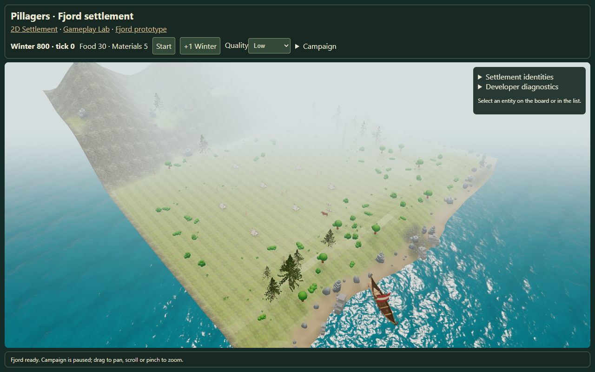
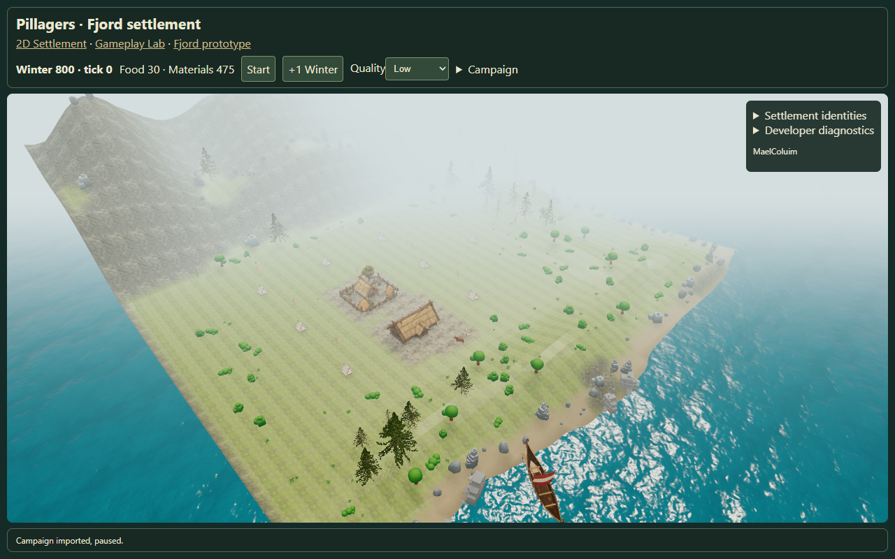
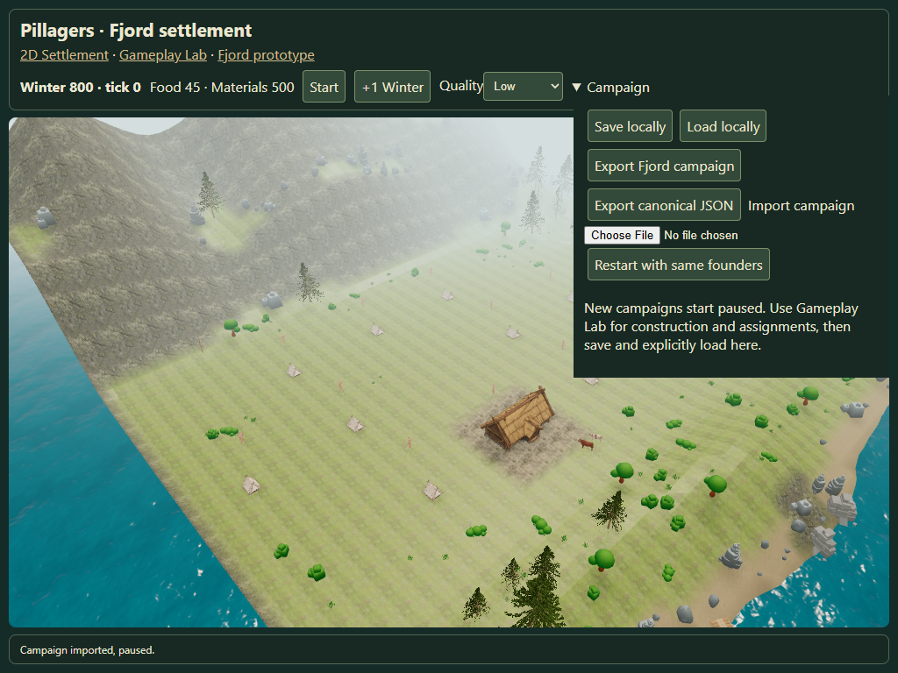
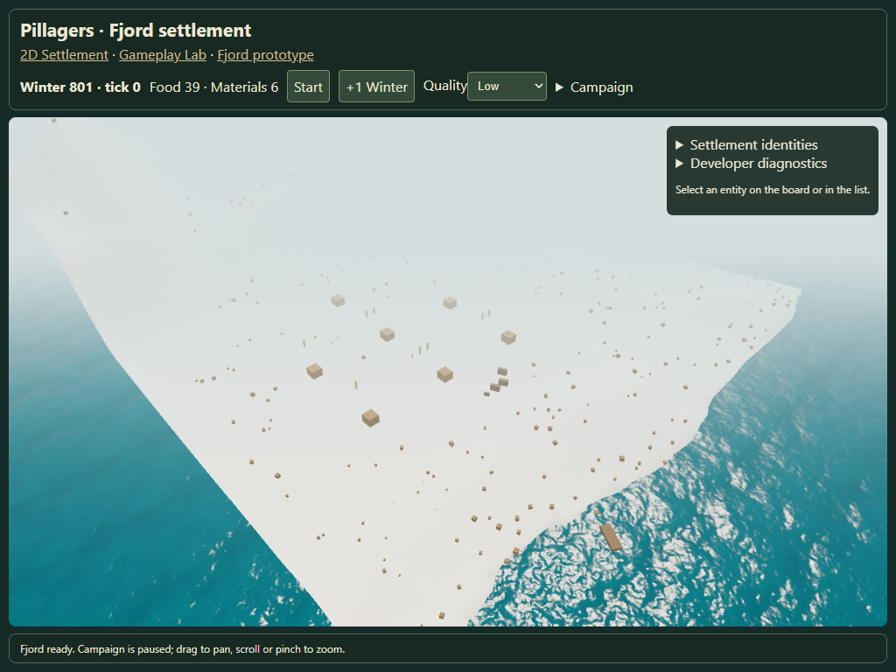

Simulation-to-Fjord bridge
Canonical campaign presentation. Tents have grass; permanent homes receive soil and connecting paths. Static source models, existing environment, shared canonical saves.
QA report · Browser checks · Open Fjord settlement

Founding campaign: grass-only tents
Permanent homes, active Farmyard and soil/path
Tablet-sized Chromium viewport (physical Safari not verified)
Missing source files: explicit metric placeholders